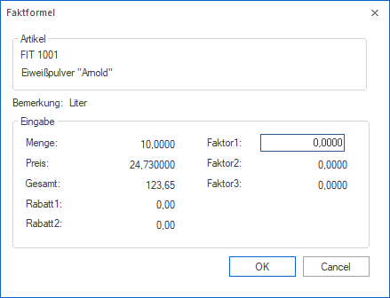

Wird einer Artikelgruppe, welche beim Artikel hinterlegte ist, eine Zeilen- oder Belegformel mit dem Befehl "Inputxxx" (xxx => Funktion) zugeordnet, so öffnet sich in der Belegerfassung automatisch dieses Eingabefenster.
Hinweis 1
Die Formel wird im Menüpunkt "Formelstamm" (WinLine FAKT - Formelstamm) definiert und ermöglicht es grundsätzlich den Ablauf der Belegbearbeitung individuell zu gestalten. Formeln sind in der Regel nur dann notwendig, wenn mit den Automatismen der Standard Belegerfassung nicht alle Anforderungen abgedeckt werden können. Dieses wird nur in Ausnahmen der Fall sein.
Hinweis 2
Details zur Formelgestaltung entnehmen Sie bitte den Kapiteln "Formelstamm" und "Formelfunktionen der WinLine FAKT

Welche Felder in dem Fenster "Faktformel" angewählt werden sollen, wird über die Zeilen- bzw. Belegformel angegeben. Folgende Befehle / Funktionen stehen zur Verfügung:
Ø InputDiscount1 / InputDiscount2
Es werden die Rabattfelder angewählt.
Ø InputFactor1 / InputFactor2 / InputFactor3
Es werden die Faktorfelder angewählt.
Ø InputPrice
Es wird das Feld "Preis" angewählt.
Ø InputQuantity
Es wird das Feld "Menge" angewählt.
Ø InputTotal
Es wird das Feld "Gesamt" angewählt.
Hinweis 1
Wird hinter dem Befehl ein Text angegeben, so wird automatisch dieser Text in dem Feld "Bemerkung" angezeigt. So kann z.B. angegeben werden, was in einem Feld eingetragen werden soll.
Beispiel
In der Formel ist folgendes hinterlegt:
Durch diesen Befehlt wird der Fokus in das Feld "Faktor1" gelegt und unter "Bemerkung" steht der Text "Liter".
Hinweis 2
Ist eine Formel in einer Belegzeile bereits einmal abgearbeitet worden, so kann die Formelabarbeitung jederzeit durch Drücken der Taste F9 auf dem Feld "Menge" wieder gestartet werden.